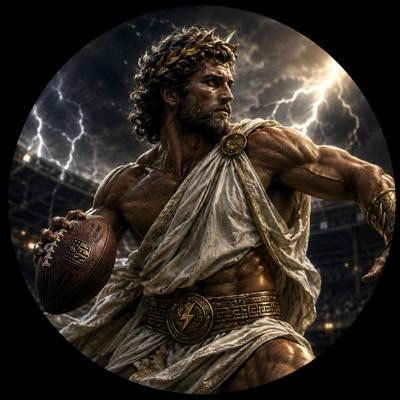
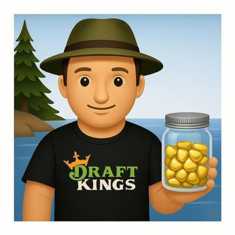
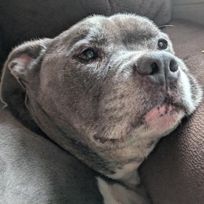

WEEK 9
IS UNWELL.
Best ball. League receipts, matchup chaos, and actual math to back up the slander.
Updated November 10, 2026 at 09:54 AM CT · Verified Sleeper results
The Chavenators chose violence
198.51 points. Weekly high score, 9-0 in all-play, and a fresh invoice for everyone below them.
🏆 Weekly Awardz
Ten managers. Ten different trophies. Data-backed chaos, most dramatic first.

Krispy KremepieScored 150.87 and STILL lost. The universe is farming engagement.
StinkyButt69
Won by 68.82. The opponent has been placed in witness protection.
The Chavenators
Jumped from #10 to #1 in scoring. Lazarus got the Wi-Fi password.
The fighting greeks
Won despite ranking #6 in points. The schedule is their franchise QB.

bingbongtinydong53% of points came from outside the top three. Actual bench-industrial complex.
docjoff
Fell from #2 to #9. The wheels left the group chat.
Lamar hit it, Cam came
9 real wins vs 5.56 deserved. Differential: +3.44. Schedule glazing is undefeated.

4whoresmanScored 126.19. The offense has been reported missing.
Wes Mantooth
Down 43.35 points from last week. Iceberg speedrun.
Connecticut Cheddarwurst
Top three produced 74.26 points. Stars on airplane mode.
State of every bro
Tap your team. Scoreboard first, full receipts underneath.
9-0 Lamar hit it, Cam cameWIN · 152.09
Two-TE Tango and Puka’s Payday: Undefeated Accounting by Committee
THE FILM ROOM Film room ledger reads like a hedge fund pitch: this BEST BALL auto-lineup posted 152.09 points, paced by Puka Nacua (33.50) and Bryce Young (27.59) while Javonte Williams (23.40) shoveled reliable carries into the counted five. The counted composition tilted WR-heavy (WRs 57.3) but kept RBs substantial (RBs 33.15) and TE surprisingly valuable (TE 34.05 across two tight ends), so the top-five share (55.6%) shows concentrated firepower.
THE BIGGER CONSPIRACY Conspiracy conference: schedule luck sits at 3.44 and all-play wins 7/2 confirms this roster both outscored matchups and cleaned house in head-to-head math. The meaningful advanced insight — TE aggregate (34.05) exceeding a typical single-TE week — means two tight ends counted as an alternate asset class, flipping lineup correlation in weeks when WR or QB noise underperformed.
NEXT EPISODE Next episode: the undefeated fund stays diversified yet aggressive — WR depth bankrolls ceilings, RBs buy floor and two-TE arbitrage amplifies upside. Savage punchline: stay out of court with this portfolio — it bankrupts opponents by filing invoices in end-zone touchdowns.
Top automatic best-ball scorers: Puka Nacua 33.50, Bryce Young 27.59, Javonte Williams 23.40
6-3 StinkyButt69WIN · 190.27
Match: StinkyButt69 beat docjoff, 190.27–121.45. Scored enough to win and actually got rewarded for it. Rare administrative competence. Top lineup contributors: Joe Burrow 41.29, CeeDee Lamb 33.00, Christian Watson 30.35.
Season vibe: #1 in total points with a 6-3 record. The weekly output was elite. Opponents should start reviewing their insurance. Scoring-deserved wins: 6.89; actual: 6.
Top automatic best-ball scorers: Joe Burrow 41.29, CeeDee Lamb 33.00, Christian Watson 30.35
6-3 The ChavenatorsWIN · 198.51
Match: The Chavenators beat Krispy Kremepie, 198.51–150.87. Scored enough to win and actually got rewarded for it. Rare administrative competence. Top lineup contributors: C.J. Stroud 56.11, Kenneth Walker III 37.30, Dak Prescott 30.50.
Season vibe: #2 in total points with a 6-3 record. The weekly output was elite. Opponents should start reviewing their insurance. Scoring-deserved wins: 5.89; actual: 6.
Top automatic best-ball scorers: C.J. Stroud 56.11, Kenneth Walker III 37.30, Dak Prescott 30.50
5-4 Krispy KremepieLOSS · 150.87
Glazed and Dazed: Krispy Kremepie’s WR Volcano Erupts, But The Chavenators Out-Bake Them
THE FILM ROOM Film room smelled like scorched sugar: Krispy Kremepie scored 150.87 and still lost to The Chavenators’ 198.51. Matthew Golden (31.90) and Brock Bowers (22.55) led the counted five while Justin Herbert (19.17) and Daniel Jones (18.80) supplied QB depth that combined for 37.97 — yet RBs managed only 15.55. The three‑week arc (138.25 → 172.84 → 150.87) shows a team living off WR/TED spikes.
THE BIGGER CONSPIRACY Conspiracy board: top-three share 48.8% and WRs contributed 63.9 points vs RBs’ 15.55 — that positional skew is a bakery that only sells éclairs. Meaningful insight: the roster’s WR-heavy counted output raised ceiling but collapsed floor; because RBs produced almost nothing, auto-lineup correlation suffered when the opponent generated more across positions. Punchline: Krispy Kremepie baked a perfect éclair and lost because the other guy brought a seven-course feast.
NEXT EPISODE Next episode: keep glazing the WRs and pray the RB crumbs magically multiply. Savage closer: this loss tastes like burnt sugar on velvet — beautiful, useless, and entirely digestible only by regret.
Top automatic best-ball scorers: Matthew Golden 31.90, Brock Bowers 22.55, Justin Herbert 19.17
4-5 4whoresmanLOSS · 126.19
Match: 4whoresman lost to The fighting greeks, 126.19–149.69. Opponent had more points. The scoreboard is a ruthless unpaid intern. Top lineup contributors: Tyler Shough 23.45, Christian McCaffrey 22.20, James Cook III 18.70.
Season vibe: #6 in total points with a 4-5 record. This was a #7 weekly score, while your season-long points rank is #6. Scoring-deserved wins: 4.33; actual: 4.
Top automatic best-ball scorers: Tyler Shough 23.45, Christian McCaffrey 22.20, James Cook III 18.70
4-5 Wes MantoothLOSS · 106.54
Wes Mantooth’s Week 9 Gas Leak: QB/TE Tango Implodes into Best-Ball Hiccup
THE FILM ROOM Film room: Wes Mantooth’s auto-lineup landed 106.54 points and took a 152.09 bath — Bo Nix (20.93) and Josh Allen (16.61) combined for 37.54 QB points while Amon‑Ra St. Brown (14.60) and Pat Bryant (14.6) pushed WRs to 37.85; RBs managed just 26.1 and TE was tiny at 5.05. The three‑week arc (164.18 → 149.89 → 106.54) screams mean reversion: two monster weeks then a cliff.
THE BIGGER CONSPIRACY In the locker-room mock press, the advanced insight is obvious: counted QB+WR production (QBs 37.54, WRs 37.85) clustered almost entirely in the top-five whose top-three share is 48.9% — that concentration plus paltry TE/RB floor means single-week variance crushes you. Schedule luck 1.22 didn’t help because opponent simply out-correlated Mantooth’s stars.
NEXT EPISODE Next episode: Wes will keep auto-feeding QB/WR top-end stars despite volatility; expect more heroic counted sparks but also more spectacular all‑play shutouts. Savage closer: he drafted fireworks and got smoke alarms — someone bring the extinguisher.
Top automatic best-ball scorers: Bo Nix 20.93, Josh Allen 16.61, Amon-Ra St. Brown 14.60
3-6 bingbongtinydongWIN · 151.24
Match: bingbongtinydong beat Connecticut Cheddarwurst, 151.24–126.09. Scored enough to win and actually got rewarded for it. Rare administrative competence. Top lineup contributors: Brock Purdy 29.53, Caleb Williams 22.51, Luther Burden III 18.95.
Season vibe: #4 in total points with a 3-6 record. This was a #4 weekly score, while your season-long points rank is #4. Scoring-deserved wins: 5.22; actual: 3.
Top automatic best-ball scorers: Brock Purdy 29.53, Caleb Williams 22.51, Luther Burden III 18.95
3-6 The fighting greeksWIN · 149.69
Match: The fighting greeks beat 4whoresman, 149.69–126.19. Got the W from the bottom half of weekly scoring. Timing is an elite fantasy skill. Top lineup contributors: Jordan Love 48.43, Jayden Daniels 20.81, Travis Kelce 16.30.
Season vibe: #5 in total points with a 3-6 record. This was a #6 weekly score, while your season-long points rank is #5. Scoring-deserved wins: 5.00; actual: 3.
Top automatic best-ball scorers: Jordan Love 48.43, Jayden Daniels 20.81, Travis Kelce 16.30
3-6 docjoffLOSS · 121.45
docjoff's Best-Ball Blues: Bijan & Mahomes Postage-Stamp Wins on a Soprano With Stage Fright
THE FILM ROOM Film room: Week 9 autopsy — counted best-ball five delivered 121.45 and still lost 121.45–190.27. Bijan Robinson led with 27.20 and Patrick Mahomes added 22.23, Courtland Sutton chipped 14.25 and Kaleb Johnson supplied 12.80; the counted positional haul read RB 49.4, QB 32.95, WR 32.9, TE 6.2. Three-week trend (112.61 → 176.89 → 121.45) shows volatility: a spike at Week 8 then a fall.
THE BIGGER CONSPIRACY Bigger_conspiracy: meaningful insight — RBs supplied 49.4 points while TE barely mattered (6.2), so the roster’s counted success relies on running-back premium more than tight-end margin. Schedule luck only 0.78 and a brutal weekly matchup margin of −68.82 explain the scoreboard obliteration: Bijan and Mahomes performed like co-headliners, but the supporting cast didn’t sell tickets.
NEXT EPISODE Next_episode: in this Best Ball opera the manager keeps auto-rotating Bijan/Mahomes combos hoping correlation heals the wound; with top-five counted contributors supplying the bulk of scoring and three-week oscillation proving the roster’s boom-bust heart, expect more show-stopping solos and ensemble no-shows.
Top automatic best-ball scorers: Bijan Robinson 27.20, Patrick Mahomes 22.23, Courtland Sutton 14.25
2-7 Connecticut CheddarwurstLOSS · 126.09
Cheddarwurst’s Cheese Grater: QB Duet Slices Through Thin RB Paste
THE FILM ROOM Film room: Connecticut Cheddarwurst’s Week 9 auto-lineup scored 126.09 but lost 126.09–151.24; Ja’Marr Chase (31.00) and Drake Maye (22.26) were the counted stars while Darren Waller (21.00) chipped in—those three supplied 58.9% of the counted punch. The counted positional split is brutal: WRs 50.2, QBs 38.99, TEs 31.65, RBs just 5.25.
THE BIGGER CONSPIRACY Bigger conspiracy: schedule luck −0.89 and scoring-deserved-wins 2.89 vs actual wins 2 whisper that Connecticut Cheddarwurst is a points-producing tragedy—terrific raw output but poor conversion. Meaningful advanced insight: top-three share 58.9% plus RBs contributing only 5.25 points means the roster’s correlation risk is highest when those three don’t combine; specifically, having WRs supply 50.2 points while RBs are a rounding error creates fragility against balanced opponents.
NEXT EPISODE Next episode: expect more auteur-level QB/WR theatre with supporting-cast bankruptcy—Cheddarwurst will keep selling out the cliffhanger. Savage closer: they’ve got top-billed stars and no understudies; it’s a Broadway hit that can’t pay the light bill.
Top automatic best-ball scorers: Ja'Marr Chase 31.00, Drake Maye 22.26, Darren Waller 21.00
Week 9 All-Play Record
How many of the other nine teams each manager outscored this week. This is NOT the head-to-head record.
| Rank | Manager | All-play | Week pts |
|---|---|---|---|
| 1 | The Chavenators | 9-0 | 198.51 |
| 2 | StinkyButt69 | 8-1 | 190.27 |
| 3 | Lamar hit it, Cam came | 7-2 | 152.09 |
| 4 | bingbongtinydong | 6-3 | 151.24 |
| 5 | Krispy Kremepie | 5-4 | 150.87 |
| 6 | The fighting greeks | 4-5 | 149.69 |
| 7 | 4whoresman | 3-6 | 126.19 |
| 8 | Connecticut Cheddarwurst | 2-7 | 126.09 |
| 9 | docjoff | 1-8 | 121.45 |
| 10 | Wes Mantooth | 0-9 | 106.54 |
Total Season Lucky Dawg Rankings
Actual minus expected wins. Positive = favorable matchups; negative = brutal scheduling. Every week, 9-0 all-play earns 1 expected win, not 9 actual wins.
Gold = luckiest · Purple = unluckiest · Blue = everyone else. Dot numbers match the table below.
| Rank | Manager | Expected wins | Actual wins | Luck |
|---|---|---|---|---|
| #1 | Lamar hit it, Cam came | 5.56 | 9 | +3.44 |
| #2 | Wes Mantooth | 2.78 | 4 | +1.22 |
| #3 | Krispy Kremepie | 4.22 | 5 | +0.78 |
| #4 | docjoff | 2.22 | 3 | +0.78 |
| #5 | The Chavenators | 5.89 | 6 | +0.11 |
| #6 | 4whoresman | 4.33 | 4 | -0.33 |
| #7 | Connecticut Cheddarwurst | 2.89 | 2 | -0.89 |
| #8 | StinkyButt69 | 6.89 | 6 | -0.89 |
| #9 | The fighting greeks | 5.00 | 3 | -2.00 |
| #10 | bingbongtinydong | 5.22 | 3 | -2.22 |
NFL reality check
Advanced NFL player-game stats are awaiting verification for this week. We do not recycle last week's numbers.
Next week's propaganda
The receipts do not expire
The Chavenators has the weekly crown, Wes Mantooth needs a bounce-back, and the remaining managers have seven days to manufacture excuses.